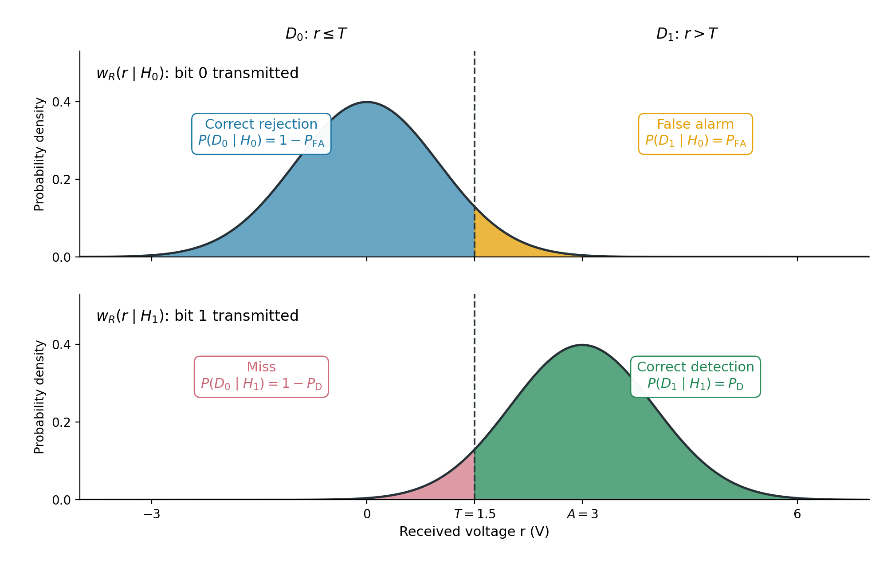
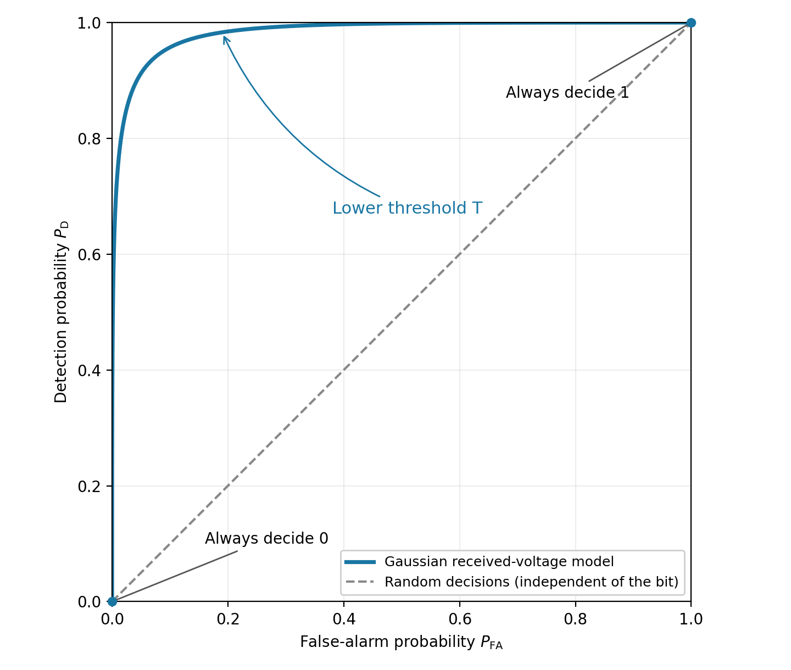

Threshold detection and ROC curves
Laboratory 6, DEDP
1 Objective
Simulate transmission of bits using two voltage levels with additive noise, make receiver decisions by thresholding, and measure detections and false alarms. Choose a maximum-likelihood threshold and plot an ROC curve.
2 Theoretical aspects
2.1 Binary decisions by thresholding
A transmitter may represent each bit by a constant voltage level:
- bit 0: s=0 V; (or some other value)
- bit 1: s=A V, where A>0.
The signal is corrupted by additive noise. The receiver takes one sample per transmitted bit to make a decision. The received voltage is:
r=s+n, \tag{1}
where n is additive noise. The two hypotheses describe what was transmitted:
- H_0: bit 0 was transmitted (s=0 V);
- H_1: bit 1 was transmitted (s=A V).
The receiver does not know the transmitted bit. It compares r with a threshold T and makes one of two decisions:
D_1\text{ (decide bit 1) if }r>T;\qquad D_0\text{ (decide bit 0) if }r\le T. \tag{2}
Hypotheses are the true transmitted bit. Decisions are the receiver’s output. Noise can cause the decision to be wrong.
2.2 Four possible outcomes
- Correct rejection (D_0 \mid H_0): receiver decides 0 (D_0) when bit 0 was transmitted (H_0).
- False alarm (D_1 \mid H_0): receiver decides 1 (D_1) when bit 0 was transmitted (H_0).
- Miss (D_0 \mid H_1): receiver decides 0 (D_0) when bit 1 was transmitted (H_1).
- Correct detection (D_1 \mid H_1): receiver decides 1 (D_1) when bit 1 was transmitted (H_1).
We can compute the (conditional) probabilities of these four outcomes, based on the distributions w(r\mid H_0) and w(r\mid H_1) in Figure 1. We know how to compute such probabilities.
- Probability of correct rejection: P_{\mathrm{CR}}=P(D_0\mid H_0).
- Probability of false alarm: P_{\mathrm{FA}}=P(D_1\mid H_0).
- Probability of miss: P_{\mathrm{M}}=P(D_0\mid H_1).
- Probability of correct detection: P_{\mathrm{D}}=P(D_1\mid H_1).

In practice, these values can be estimated from a finite number of observations, by counting.
\widehat{P}_{\mathrm{FA}} = \frac{\text{number of false alarms}}{\text{number of transmitted bit 0s}} \qquad \widehat{P}_{\mathrm{D}} = \frac{\text{number of correct detections}}{\text{number of transmitted bit 1s}}. \tag{3}
2.3 Maximum likelihood criterion
How to choose the value of the threshold T, i.e. how to take a decision based on a received voltage r?
The Maximum Likelihood (ML) criterion chooses the hypothesis with the larger density function at the received voltage r:
- take decision D_1 if w_R(r\mid H_1)>w_R(r\mid H_0)
- take decision D_0 if w_R(r\mid H_1)\le w_R(r\mid H_0).
In our case, this means choosing the threshold T at the intersection of the two densities, which is in the middle, as shown in Figure 1.
T_{\mathrm{ML}} = \frac{0 + A}{2}
2.4 Changing the threshold: the ROC curve
In general, choosing a threshold T is a tradeoff between false alarms and correct detections.
The receiver operating characteristic (ROC) is a graphical representation obtained by varying T and plotting:
- horizontal axis: P_{\mathrm{FA}};
- vertical axis: P_{\mathrm{D}}.
Each threshold value gives one point. The designer picks the threshold that meets the requirements.
The ROC curve indicates how well the two hypotheses can be separated across thresholds.

2.5 Matlab tools
Generating random bits with chosen probabilities
Use rand(1,N) to generate N uniform samples between 0 and 1. Comparing each sample with 0.5 produces random bits with equal probabilities:
N = 20000;
bits = rand(1,N) > 0.5;To change the proportions, adapt the comparison threshold. For example, to obtain approximately 30% zeros and 70% ones:
bits = rand(1,N) > 0.3;Samples at or below 0.3 become 0; samples above 0.3 become 1. Since rand() is uniform, the probabilities are P(0)=0.3 and P(1)=0.7.
More generally, rand(1,N) > p0 produces zeros with probability p0 and ones with probability 1-p0.
Transmitted and received voltages
Multiply the bit vector by A, or use similar methods, to obtain the transmitted voltages.
Use randn() as in Lab 3 to generate independent Gaussian noise and add it to the transmitted voltages to obtain the received vector r.
We can separate received samples according to the transmitted bits, not the receiver’s decisions, using logical indexing.
r0 = r(bits == 0);
r1 = r(bits == 1);Reminder: == tests equality element by element, while = assigns a value to a variable.
Varying the threshold for the ROC
To vary the threshold, create a vector such as thresholds = -4:0.05:7. Preallocate result vectors with zeros(size(thresholds)), then use a for loop to fill one entry per threshold. Plot the ROC with plot(pFA,pD).
2.6 Summary: functions and notation you should know
| Signature or notation | Example | Description |
|---|---|---|
rand(1,N) > p0 |
bits = rand(1,N) > 0.3 |
Random bits: probability p0 of 0 and 1-p0 of 1 |
A*bits |
s = 3*bits |
Map bits to transmitted voltage levels 0 and A |
r(bits == 0) |
r0 = r(bits == 0) |
Select received samples whose transmitted bit was 0 |
mu + sigma*randn(1,N) |
3 + randn(1,10000) |
Normal samples with mean mu and standard deviation sigma |
r > T |
decision = r > 1.5 |
Logical decisions: 1 for D_1, 0 for D_0 |
sum(condition) |
sum(r0 > T) |
Count observations satisfying a condition |
numel(x) |
numel(r0) |
Number of observations in a vector |
hold on, hold off, legend(...) |
legend('Bit 0 transmitted','Bit 1 transmitted') |
Overlay plots and identify them |
a:step:b |
-4:0.05:7 |
Candidate thresholds with a fixed step |
zeros(size(v)) |
pFA = zeros(size(thresholds)) |
Preallocate a vector with the same dimensions as v |
for k = 1:numel(v) |
T = thresholds(k) inside the loop |
Visit each candidate by index |
plot(x,y) |
plot(pFA,pD) |
Plot detection probability against false-alarm probability |
3 Theoretical exercise
A transmitter sends bit 0 as 0 V and bit 1 as 3 V. The received sample is r=s+n, where the noise has the normal distribution \mathcal{N}(0,1) with voltages expressed in volts. The receiver decides D_1 if r>T, and D_0 otherwise.
Compute the theoretical probabilities of false alarm and correct detection:
Draw the distribution of r under each hypothesis, w(r|H_0) and w(r|H_1).
What is the value of T for the Maximum Likelihood (ML) decision rule?
Compute the false-alarm probability P_{\mathrm{FA}} and the detection probability P_{\mathrm{D}} for the ML threshold.
4 Matlab exercises
Write your commands in a script or live script. Label figures and record your numerical results and short explanations in comments. Use the same generated vectors throughout Exercises 1–3; do not generate new received samples inside the threshold loop.
Simulate transmission using two voltage levels:
Use A=3 V. The channel adds independent Gaussian noise with mean 0 V and standard deviation 1 V to each transmitted voltage. Thus, received samples follow \mathcal{N}(0,1) under H_0 and \mathcal{N}(3,1) under H_1, with voltages expressed in volts. Each sample leads to one bit decision.
Generate a row vector
bitsof 20000 random bits 0 and 1, with equal probabilities. Do this by callingrand()and comparing with a suitable threshold.Transform
bitsto a vectorsof transmitted voltages, using 0 V for bit 0 and 3 V for bit 1.Generate a noise vector of the same size, with the normal distribution \mathcal{N}(0,1), and create a received vector
r = s + n.Run the code below to estimate the two conditional densities. Can a threshold separate all received samples correctly?
% Select received samples according to the transmitted bit r0 = r(bits == 0); % What does this line do? r1 = r(bits == 1); % What does this line do? % Use the same bin boundaries for both histograms edges = -4:0.25:7; figure histogram(r0, edges, 'Normalization', 'pdf', ... 'FaceColor', [0 0.45 0.74], 'FaceAlpha', 0.5) hold on histogram(r1, edges, 'Normalization', 'pdf', ... 'FaceColor', [0.85 0.33 0.10], 'FaceAlpha', 0.5) hold off xlabel('Received voltage (V)') ylabel('Estimated probability density') legend('Bit 0 transmitted', 'Bit 1 transmitted')From the histograms, choose an appropriate threshold T to separate the two distributions. What happens to false alarms and misses when the threshold increases? What about when it decreases?
Evaluate individual thresholds:
Set
T = 1.5. Compute the vector of decisionsdby comparing the values inrwith the threshold. Each element ofdshould be 1 (D_1) if the received voltage is greater thanT, and 0 (D_0) otherwise. The vectorsbits,r, anddmust all have the same size.Compare
dwith the transmitted vectorbitsand count the four possible outcomes:- false alarms: the transmitted bit is 0, but the decision is 1;
- correct rejections: the transmitted bit is 0 and the decision is 0;
- correct detections: the transmitted bit is 1 and the decision is 1;
- misses: the transmitted bit is 1, but the decision is 0.
Use
==to test equality,&to combine two logical conditions element by element, andsum()to count the positions satisfying both conditions. Put parentheses around each comparison.Count the transmitted 0s and 1s, storing the counts in
N0andN1. Verify that false alarms plus correct rejections equalN0, and correct detections plus misses equalN1.Estimate the probability of false alarm
pFAby dividing the counts of false alarms byN0. EstimatepDby dividing the correct detection count byN1, and the miss probability by dividing the miss count byN1. Verify that the detection and miss probabilities add up to 1.For
T = 1.5, comparepFAandpDwith the theoretical results from the theoretical exercise. Why are the estimates not exactly equal to theory?Calculate the total number of errors as false alarms plus misses. Check it by counting the positions where
ddiffers frombits, using~=(not equal).Repeat for
T = 1andT = 2, using the samebitsandr. Record a small table with one row per threshold and columns forT,pFA,pD, and the total error count. Compare with your prediction from Exercise 1.
Draw the ROC:
Create a vector
thresholdsof candidate thresholds from -4 to 7 in steps of 0.05.Complete the template below to calculate
pFAandpDfor each threshold. Replace each...with the appropriate expression, using the counting method from Exercise 2. Do not generate new noise inside the loop.pFA = zeros(size(thresholds)); pD = zeros(size(thresholds)); for k = 1:numel(thresholds) T = thresholds(k); % Compute decisions for the received samples d = ...; % Compare decisions with transmitted bits and count outcomes falseAlarms = ...; correctDetections = ...; % Divide by the number of samples for the corresponding true bit pFA(k) = ...; pD(k) = ...; endPlot the vector
pDagainstpFA.
5 Final questions
- If every received voltage increases by 10 V, how should the threshold change to keep every decision unchanged? Would the ROC change?
- Can a detector have no false alarms in 10000 simulated samples for transmitted bit 0 even though its true false-alarm probability is positive?
- A receiver always outputs D_0 (bit 0). What are its detection and false-alarm probabilities? Where is its point on the ROC? What if it always outputs D_1 instead?